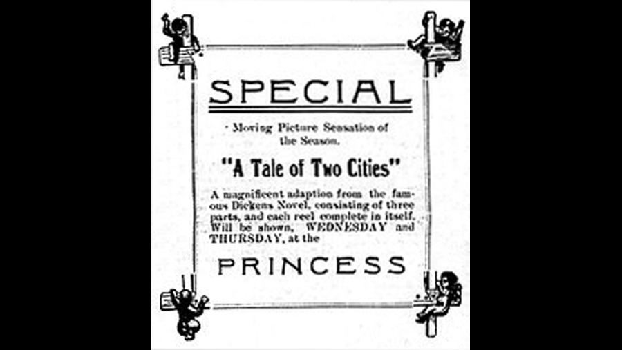

1911

CAST
Sydney Carton
-
Maurice Costello
Charles Darnay
-
Leo Delaney
Lucie Manette
-
Florence Turner
Mimi
-
Norma Talmadge
Jarvis Lorry
-
William Shea
Dr. Alexandre Manette
-
Charles Kent
Miss Pross
-
Julia Swayne Gordon (uncredited)
Madame Defarge
-
Edith Halloran
Monsieur Defarge
-
Tefft Johnson
Jailer
-
John Bunny
The Woodcutter's Child
-
Florence Foley
Marquis St-Evrémonde
-
William Humphrey
Duke's Son in Early Scenes
-
Kenneth Casey (uncredited)
CREATIVE TEAM
Director
-
William J. Humphrey
Screenplay
-
Eugene Mullin